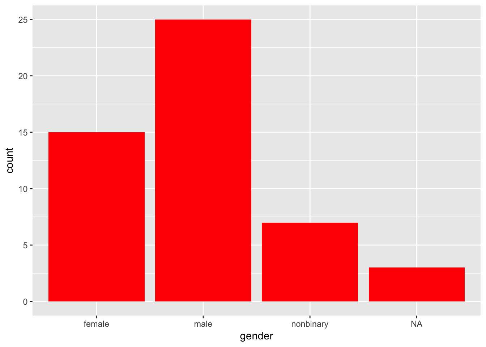
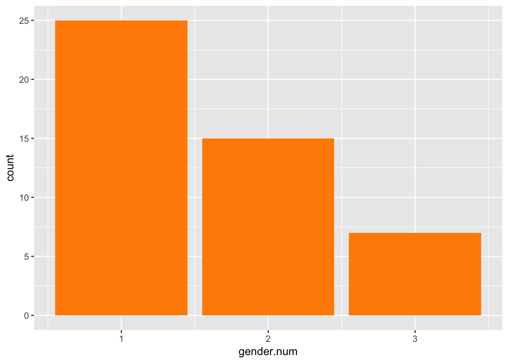
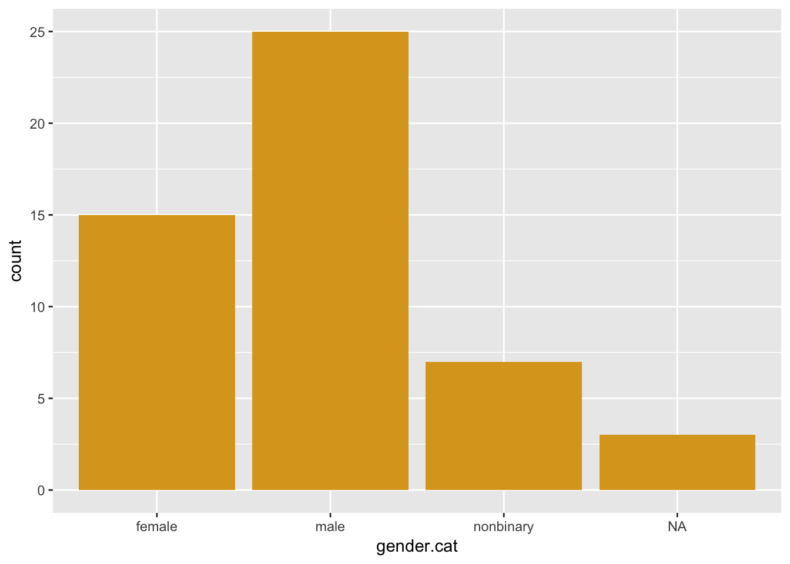
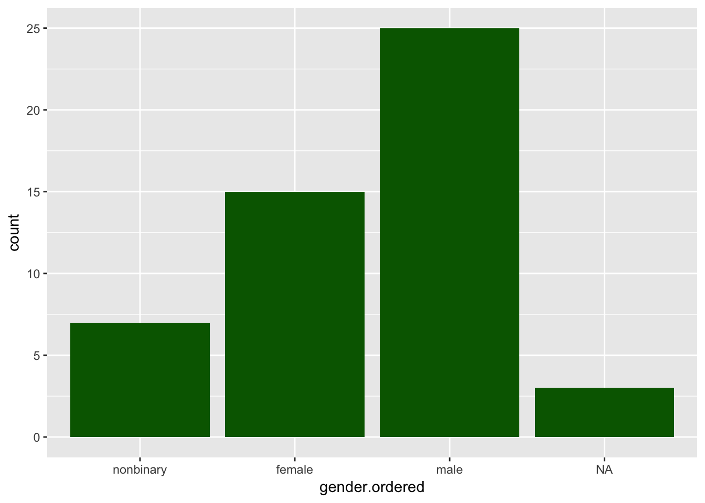
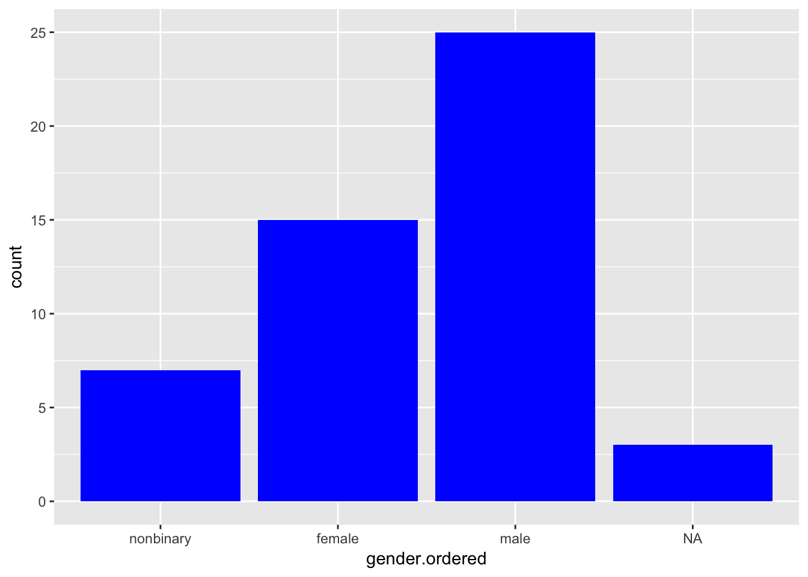

Download the Rmd notebook for this example
I often find myself needing to recode variables. I wrote previously about recoding a characters into a numbers using various coding schemes. But sometimes I want to recode numeric values into characters; this is particularly useful for graphing and for double-checking the meaning of your variable levels.
First, I’ll create a data frame with 50 subjects and randomly choose their genders from a list of 4 possibilities with the population proportions 40% male, 40% female, 10% non-binary, and 10% missing data.
suppressMessages( library(tidyverse) )
set.seed(12) # for reproducibility; delete when running simulations
genders <- c("male", "female", "nonbinary", NA)
df <- data.frame(
id = rep(1:50),
gender = sample(genders, 50, replace = TRUE, prob = c(.4, .4, .1, .1))
)I’ll graph it to make sure it looks like I expect. This is one of the few times a bar plot is appropriate.
df %>%
ggplot(aes(gender)) +
geom_bar(fill="red")
Now I’m going to transform the character variables into numbers and graph it again. As you can see, when a categorical variable is coded with numbers, the missing values are omitted from the graph.
df2 <- df %>%
mutate(
gender.num = recode(gender, "male" = 1, "female" = 2, "nonbinary" = 3)
)
df2 %>%
ggplot(aes(gender.num)) +
geom_bar(fill="darkorange")## Warning: Removed 3 rows containing non-finite values (stat_count).
Now I’m going to recode the numeric column back into words.
# this won't work
df3 <- df2 %>%
mutate(
gender.cat = recode(gender.num, 1 = "male", 2 = "female", 3 = "nonbinary")
)That didn’t work. You’ll get an error that looks like:
Error: unexpected '=' in:
" mutate(
gender.cat = recode(gender.num, 1 ="
recode() requires that the left side of the equal sign be in quotes. Let’s try this again and graph it.
df3 <- df2 %>%
mutate(
gender.cat = recode(gender.num, "1" = "male", "2" = "female", "3" = "nonbinary")
)
df3 %>%
ggplot(aes(gender.cat)) +
geom_bar(fill="goldenrod")
What if you want your variables in a different order? You can use the factor() function to set the order of the levels.
df4 <- df3 %>%
mutate(
gender.ordered = factor(gender.cat, levels = c("nonbinary", "female", "male"))
)
df4 %>%
ggplot(aes(gender.ordered)) +
geom_bar(fill="darkgreen")
Let’s put it all together to see how you can go from numeric to character values and get them in the order you want. We’ll start with an “original” dataframe of just the numerically coded genders from the previous data. Then we’ll make a new data frame by recoding the numeric column into words and then ordering this.
Note that I’ve given the new column the name gender.ordered and then redefined this column with the reordered levels. This is a nice feature of the tidyverse. You could put all that code on one line with complicated brackets, but it’s easier to manipulate a variable in steps and you can use previously created variables in subsequent steps of a mutate() function.
data.original <- df4 %>% select(gender.num)
data.recoded <- data.original %>%
mutate(
gender.ordered = recode(gender.num, "1" = "male", "2" = "female", "3" = "nonbinary"),
gender.ordered = factor(gender.ordered, levels = c("nonbinary", "female", "male"))
)
data.recoded %>%
ggplot(aes(gender.ordered)) +
geom_bar(fill="blue")